Click and drag the map to move around. Scroll up to zoom in and scroll down to zoom out. You can also double-click anywhere on the map to zoom into that spot.
Click on the "Return to Full Extent" key to return to the default zoom level and recenter the view on Downtown Toronto.
Click on the full-screen key to view the screen in full-screen mode.
Click on the show legend key to show or hide the legend.
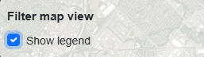
➡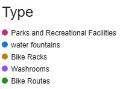
Use the layer panel on the right side of the screen to toggle layers on and off.
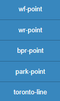
Water Fountains
Washrooms
Bike Racks
Parks and Recreational Facilities
Bike Routes
Click on any Water Fountain or Washroom point on the map to see it's address.
Use the Find My Location tool to place a marker on the map based on your location.
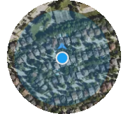
1.Click on the map to create the first point.
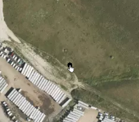
2. Click to plot additional points for yout journey.
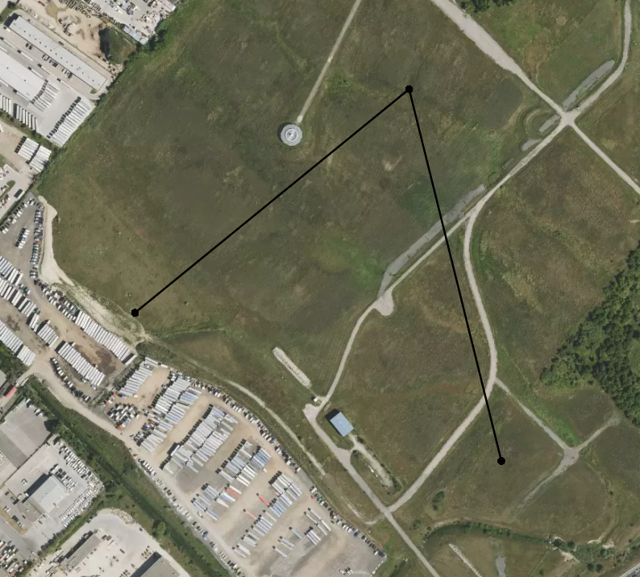
3. The total journey distance between all the points is displayed in the Total Distance box that appears at the top of the screen .
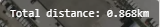
4. To clear the points and the measurement, click the Clear button at the top of the screen.
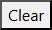
Input your current address in the "A" box in the top right of the map, and the destination address in the "B" box underneath it. As you input each address, the map will pan to its' location.
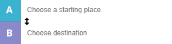
Beneath the address box, select your transportation method.
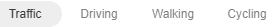
A direction box will pop up, giving you step-by-step instructions on how to get to your destination, along with distance and estimated travel time based on your method of transportation.
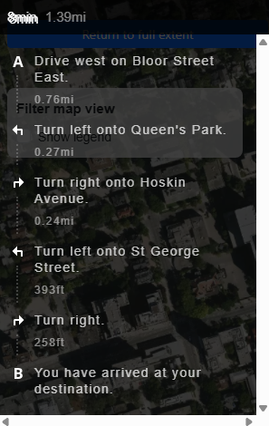